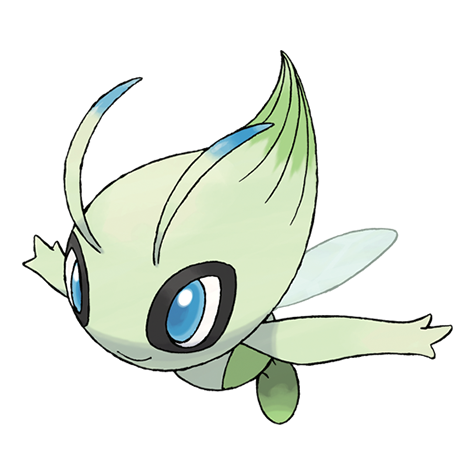

Mysterious Mountains
神秘なる山English counterpart: Skyridge


Mysterious Mountains closes the Japanese e-Card era with a formidable final trio: Crystal Charizard, Crobat, and Celebi. Charizard is the obvious centerpiece, but the standard holos offer their own highlights, especially Gengar, Gyarados, and Arcanine. It is a set with both a major trophy-card hunt and plenty of striking binder cards.
Chase cards: Crystal Charizard 089/088, Crystal Crobat 090/088, Crystal Celebi 091/088, and holo Gengar 044/088.
Set fact: This was Japan’s fifth and final main e-Card expansion. Its 88-card numbering continues through 091/088 because the three Crystal Pokémon are secret cards.
Numbers are from the Japanese cards. Holo and non-holo versions with separate Japanese numbers have separate rows; secret cards above the set denominator are included.
91 of 91 cards
| Card no. | Card name | Rarity / class | Finish | Find it |
|---|---|---|---|---|
| 001/088 | WeedleビードルPokémon | Common | Non-holo | eBay ↗ |
| 002/088 | WeedleビードルPokémon | Common | Non-holo | eBay ↗ |
| 003/088 | KakunaコクーンPokémon | Common | Non-holo | eBay ↗ |
| 004/088 | BeedrillスピアーPokémon | Rare | Non-holo | eBay ↗ |
| 005/088 | BeedrillスピアーPokémon | Rare Holo | Holo | eBay ↗ |
| 006/088 | Nidoran♀ニドラン♀Pokémon | Common | Non-holo | eBay ↗ |
| 007/088 | Nidoran♀ニドラン♀Pokémon | Common | Non-holo | eBay ↗ |
| 008/088 | NidorinaニドリーナPokémon | Common | Non-holo | eBay ↗ |
| 009/088 | NidoqueenニドクインPokémon | Rare | Non-holo | eBay ↗ |
| 010/088 | NidoqueenニドクインPokémon | Rare Holo | Holo | eBay ↗ |
| 011/088 | VenonatコンパンPokémon | Common | Non-holo | eBay ↗ |
| 012/088 | VenomothモルフォンPokémon | Common | Non-holo | eBay ↗ |
| 013/088 | SunkernヒマナッツPokémon | Common | Non-holo | eBay ↗ |
| 014/088 | SunfloraキマワリPokémon | Common | Non-holo | eBay ↗ |
| 015/088 | GrowlitheガーディPokémon | Common | Non-holo | eBay ↗ |
| 016/088 | ArcanineウインディPokémon | Rare | Non-holo | eBay ↗ |
| 017/088 | ArcanineウインディPokémon | Rare Holo | Holo | eBay ↗ |
| 018/088 | MoltresファイヤーPokémon | Rare | Non-holo | eBay ↗ |
| 019/088 | MoltresファイヤーPokémon | Rare Holo | Holo | eBay ↗ |
| 020/088 | SlugmaマグマッグPokémon | Common | Non-holo | eBay ↗ |
| 021/088 | HoundourデルビルPokémon | Common | Non-holo | eBay ↗ |
| 022/088 | SeelパウワウPokémon | Common | Non-holo | eBay ↗ |
| 023/088 | SeelパウワウPokémon | Common | Non-holo | eBay ↗ |
| 024/088 | DewgongジュゴンPokémon | Rare | Non-holo | eBay ↗ |
| 025/088 | DewgongジュゴンPokémon | Rare Holo | Holo | eBay ↗ |
| 026/088 | MagikarpコイキングPokémon | Common | Non-holo | eBay ↗ |
| 027/088 | GyaradosギャラドスPokémon | Rare | Non-holo | eBay ↗ |
| 028/088 | GyaradosギャラドスPokémon | Rare Holo | Holo | eBay ↗ |
| 029/088 | LaprasラプラスPokémon | Common | Non-holo | eBay ↗ |
| 030/088 | ArticunoフリーザーPokémon | Rare | Non-holo | eBay ↗ |
| 031/088 | ArticunoフリーザーPokémon | Rare Holo | Holo | eBay ↗ |
| 032/088 | SwinubウリムーPokémon | Common | Non-holo | eBay ↗ |
| 033/088 | PiloswineイノムーPokémon | Rare | Non-holo | eBay ↗ |
| 034/088 | PiloswineイノムーPokémon | Rare Holo | Holo | eBay ↗ |
| 035/088 | DelibirdデリバードPokémon | Common | Non-holo | eBay ↗ |
| 036/088 | MagnemiteコイルPokémon | Common | Non-holo | eBay ↗ |
| 037/088 | MagnetonレアコイルPokémon | Rare | Non-holo | eBay ↗ |
| 038/088 | MagnetonレアコイルPokémon | Rare Holo | Holo | eBay ↗ |
| 039/088 | VoltorbビリリダマPokémon | Common | Non-holo | eBay ↗ |
| 040/088 | ElectrodeマルマインPokémon | Uncommon | Non-holo | eBay ↗ |
| 041/088 | GastlyゴースPokémon | Common | Non-holo | eBay ↗ |
| 042/088 | HaunterゴーストPokémon | Common | Non-holo | eBay ↗ |
| 043/088 | GengarゲンガーPokémon | Rare | Non-holo | eBay ↗ |
| 044/088 | GengarゲンガーPokémon | Rare Holo | Holo | eBay ↗ |
| 045/088 | NatuネイティPokémon | Common | Non-holo | eBay ↗ |
| 046/088 | XatuネイティオPokémon | Rare | Non-holo | eBay ↗ |
| 047/088 | XatuネイティオPokémon | Rare Holo | Holo | eBay ↗ |
| 048/088 | DiglettディグダPokémon | Common | Non-holo | eBay ↗ |
| 049/088 | DugtrioダグトリオPokémon | Common | Non-holo | eBay ↗ |
| 050/088 | MachopワンリキーPokémon | Common | Non-holo | eBay ↗ |
| 051/088 | MachokeゴーリキーPokémon | Common | Non-holo | eBay ↗ |
| 052/088 | MachampカイリキーPokémon | Rare | Non-holo | eBay ↗ |
| 053/088 | MachampカイリキーPokémon | Rare Holo | Holo | eBay ↗ |
| 054/088 | GligarグライガーPokémon | Common | Non-holo | eBay ↗ |
| 055/088 | MagcargoマグカルゴPokémon | Rare | Non-holo | eBay ↗ |
| 056/088 | MagcargoマグカルゴPokémon | Rare Holo | Holo | eBay ↗ |
| 057/088 | SwinubウリムーPokémon | Common | Non-holo | eBay ↗ |
| 058/088 | PiloswineイノムーPokémon | Uncommon | Non-holo | eBay ↗ |
| 059/088 | JigglypuffプリンPokémon | Common | Non-holo | eBay ↗ |
| 060/088 | WigglytuffプクリンPokémon | Uncommon | Non-holo | eBay ↗ |
| 061/088 | Farfetch’dカモネギPokémon | Common | Non-holo | eBay ↗ |
| 062/088 | SnorlaxカビゴンPokémon | Common | Non-holo | eBay ↗ |
| 063/088 | HoothootホーホーPokémon | Common | Non-holo | eBay ↗ |
| 064/088 | NoctowlヨルノズクPokémon | Uncommon | Non-holo | eBay ↗ |
| 065/088 | IgglybuffププリンPokémon | Common | Non-holo | eBay ↗ |
| 066/088 | TeddiursaヒメグマPokémon | Common | Non-holo | eBay ↗ |
| 067/088 | UrsaringリングマPokémon | Common | Non-holo | eBay ↗ |
| 068/088 | StantlerオドシシPokémon | Common | Non-holo | eBay ↗ |
| 069/088 | HoundoomヘルガーPokémon | Rare | Non-holo | eBay ↗ |
| 070/088 | HoundoomヘルガーPokémon | Rare Holo | Holo | eBay ↗ |
| 071/088 | MagnetonレアコイルPokémon | Rare | Non-holo | eBay ↗ |
| 072/088 | MagnetonレアコイルPokémon | Rare Holo | Holo | eBay ↗ |
| 073/088 | SteelixハガネールPokémon | Rare | Non-holo | eBay ↗ |
| 074/088 | SteelixハガネールPokémon | Rare Holo | Holo | eBay ↗ |
| 075/088 | Fast BallスピードボールTrainer | Uncommon | Non-holo | eBay ↗ |
| 076/088 | Friend BallフレンドボールTrainer | Uncommon | Non-holo | eBay ↗ |
| 077/088 | Lure BallルアーボールTrainer | Uncommon | Non-holo | eBay ↗ |
| 078/088 | Relic Hunter遺跡ハンターTrainer | Uncommon | Non-holo | eBay ↗ |
| 079/088 | Fisherman釣り人Trainer | Uncommon | Non-holo | eBay ↗ |
| 080/088 | Apricorn Makerぼんぐり職人Trainer | Uncommon | Non-holo | eBay ↗ |
| 081/088 | Miracle Sphere αミラクルスフィアαTrainer | Uncommon | Non-holo | eBay ↗ |
| 082/088 | Miracle Sphere βミラクルスフィアβTrainer | Uncommon | Non-holo | eBay ↗ |
| 083/088 | Miracle Sphere γミラクルスフィアγTrainer | Uncommon | Non-holo | eBay ↗ |
| 084/088 | Ancient Ruins古代遺跡Trainer | Uncommon | Non-holo | eBay ↗ |
| 085/088 | Mystery ZoneミステリーゾーンTrainer | Uncommon | Non-holo | eBay ↗ |
| 086/088 | Cyclone EnergyサイクロンエネルギーEnergy | Uncommon | Non-holo | eBay ↗ |
| 087/088 | Bounce EnergyバウンスエネルギーEnergy | Uncommon | Non-holo | eBay ↗ |
| 088/088 | Retro EnergyレトロエネルギーEnergy | Uncommon | Non-holo | eBay ↗ |
| 089/088 | CharizardリザードンPokémon | Crystal · secret rare | Holo | eBay ↗ |
| 090/088 | CrobatクロバットPokémon | Crystal · secret rare | Holo | eBay ↗ |
| 091/088 | CelebiセレビィPokémon | Crystal · secret rare | Holo | eBay ↗ |
No matching cards. Try another name or reset the filters.